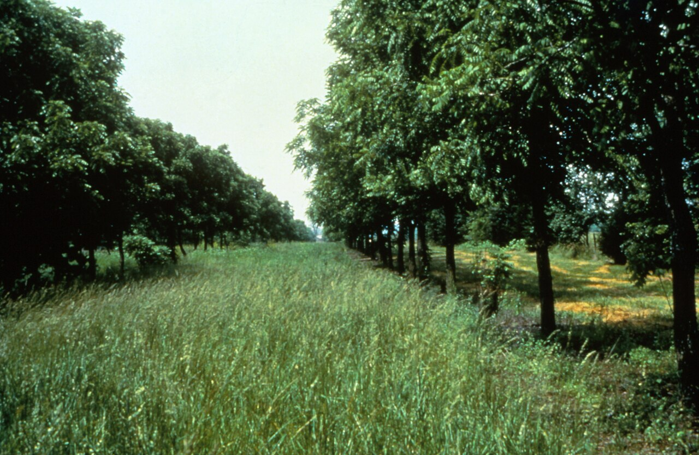

Como montar um Sistema Agroflorestal (SAF)

O Sistema Agroflorestal, conhecido como SAF, é um modelo de produção que combina árvores, culturas agrícolas e plantas nativas no mesmo espaço. Ele funciona como uma floresta planejada, onde tudo está conectado.
Diferente da monocultura, que usa apenas uma cultura por área, o SAF trabalha com diversidade. Isso torna o sistema mais equilibrado, resistente e sustentável ao longo do tempo.
As plantas são organizadas em camadas. No estrato mais alto ficam árvores grandes como araucária e ipês, que ajudam a proteger o sistema contra vento e sol excessivo.
No estrato intermediário ficam frutíferas como banana, maracujá, goiaba e outras espécies que também geram renda para o produtor.
No estrato mais baixo ficam hortaliças, ervas e plantas medicinais, que aproveitam a sombra parcial e o ambiente mais úmido.
Já no nível do solo, plantas como feijão-guandu e mucuna desempenham papel fundamental, pois protegem a terra, evitam erosão e devolvem nutrientes naturalmente.
Com o tempo, o próprio sistema se autorregula. As folhas que caem viram adubo, o solo se fortalece e a produção se mantém constante ao longo do ano, com menos custos e mais equilíbrio ambiental.
De acordo com o Sistema Agroflorestal – Guia Prático da Embrapa (2021), a diversificação de estratos e a inclusão de leguminosas melhoram a captura de nitrogênio e aumentam a resiliência do sistema frente a eventos climáticos extremos. (Fonte: EMBRAPA, 2021)